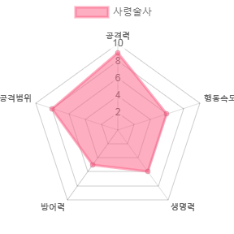

-
검사
검을 주무기로 사용하는 검사는 빠른 기동성과 강력한 참격를 토대로 전투에 임합니다.
검을 사용한 패링과 방어능력도 뛰어나 대인전에서 강력한 능력을 보여줍니다.
상대방의 약점에 참격을 가하면 신체 일부를 절단시킬 수 있으며 출혈을 유발합니다.
-
성기사
성기사는 한손검과 방패를 주무기로 사용하며 공격과 방어에 균형 잡힌 모습을 자랑합니다.
대인전에 강력한 군중제어술을 사용하며 또한 아군과 자신을 치유하거나 보호하는 기술을 가지고 있습니다.
전투중 일정시간 성검을 소환할 수 있으며 하늘에서 떨어진 성검을 든 순간부터 공격력이 매우 높아집니다.
-
전사
한손검과 방패를 주무기로 사용하며 탄탄한 신체능력을 바탕으로 다양한 기술을 구사하는 전투의 달인입니다.
순식간에 적에게 접근하여 공격할 수도 있고 방패를 사용하여
적의 공격을 막거나 흘리는 등 어느 상황에서도 물러서지 않습니다.
전투가 길어지면 길어질 수록 신체가 각성하여 모든 능력이 향상됩니다.
-
레인저
활과 단검을 사용하는 레인저는 어떠한 상황에서도 강력한 원거리 스페셜리스트입니다.
함정을 땅에 설치할 수 있으며 활을 이용한 다양한 기술들을 사용할 수 있습니다.
일정시간 활을 차징을 하여 적의 머리에 맞춘다면 적이 즉사합니다.
-
로그
소검과 표창을 사용하는 로그는 짧은 시간안에 아주 큰 피해를 입히는 암살특화 캐릭터입니다.
어두운 곳에서 은신을 사용하여 적들을 암살 할 수 있으며 높은 민첩성을 바탕으로 치고 빠지기 싸움에 능합니다.
표창을 던져 던진곳으로 이동하여 이동한뒤 적을 암살 할 수 있습니다.
-
사제
지팡이와 책을 들고 다니는 사제는 아군에게 여러가지 버프와 힐을 줄 수 있는 버퍼입니다.
적과 교전하는 능력은 현저히 떨어지지만 아군에게 걸어주는 버프는 매우 강력하기에 다인 파티에서 필수입니다.
아군과 자신을 일정시간 무적으로 만들어주는 강력한 보호기를 가지고 있습니다.
-
광전사
한손 도끼를 각각 양손에 든 광전사는 지치지 않는 신체와 강력한 일격으로 적을 압살합니다.
전투가 길어질수록, 피해를 입을수록 강해지는 힘을 토대로 적과 싸우며 도끼를 던져서 적을 맞출 수도 있습니다.
체력이 일정이하로 떨어지면 공격속도와 힘이 두배로 늘어나며 피해를 입힐수록 체력이 회복합니다.
-
마법사
지팡이를 들고 다니는 마법사는 원소의 힘을 빌려서 적들을 제압합니다.
일정시간 케스팅을 해야하는 단점이 있지만 그 케스팅이 끝난다면 강력한 위력의 마법을 구사합니다.
아군과 자신을 원하는 위치에 순간이동 시킬 수 있으며, 적들에게 번개를 떨어뜨릴 수 있습니다.
-
격투가
별 다른 무기를 사용하지 않는 격투가는 자신의 극한으로 단련된 몸이 무기입니다.
빠른 발놀림과 이를 바탕으로 한 회피 능력은 격투가에게 연속공격을 가능하게 합니다.
일정횟수 이상 적에게 타격을 하면 적의 내부에 직접 피해를 가해 강한 일격을 먹일 수 있습니다.
-
소환사
소검과 소환수들을 이용하여 싸우는 소환사는 수환수의 능력을 이용한 기술을 사용하여 싸웁니다.
평소에는 빠르게 소환수를 타고 다닐 수 있으며 다양한 소환수들을 이용하여 여러 상황에 문제없이 전투 할 수 있습니다.
일정시간 강력한 신수를 소환할 수 있으며 신수는 소환시간이 끝나면 터지며 적에게 큰 상처를 입힙니다.
-
사령술사

부적을 사용하는 사령술사는 적에게 마법을 걸어 약화시키고 적의 시체를 이용한 소환수를 소환할 수 있습니다.
사령술사의 마법은 쌓이면 쌓일수록 점점 강력해지며 적이 죽을 때마다 영혼을 흡수하여 일정시간 능력치가 강해집니다.
적들의 오감을 마비시키는 마법을 걸어 일정시간 적들이 피아를 구분하지 못하게 만듭니다.
-
마검사
마검사는 자신의 신체능력을 향상시키는 마법과 함께 태도를 사용합니다.
태도에 마법을 걸어 피해를 극대화 시킬 수 있으며 기초적인 마법을 사용할 수 있습니다.
일정시간 자신의 신체와 태도에 강력한 마법을 걸어 적에게 큰 피해를 입힐 수 있습니다.